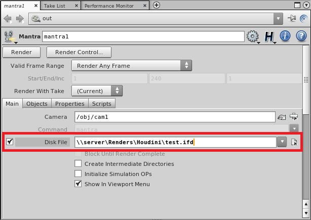
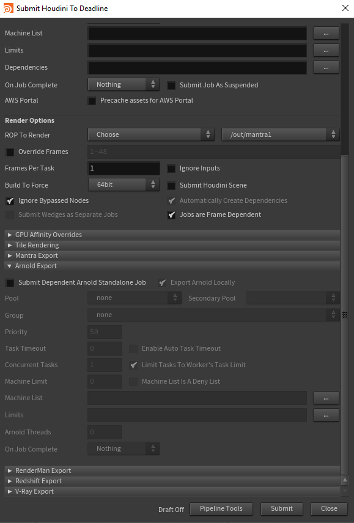
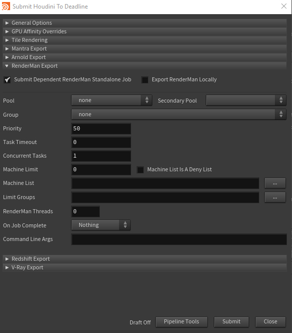
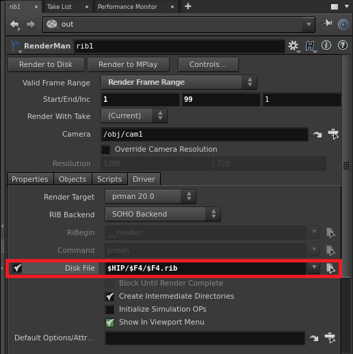
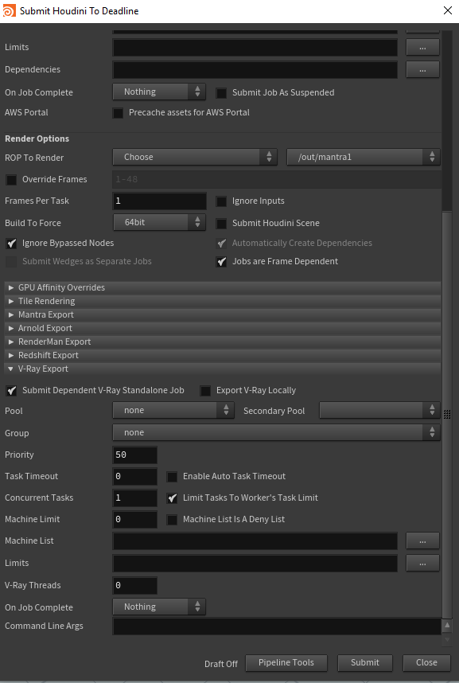
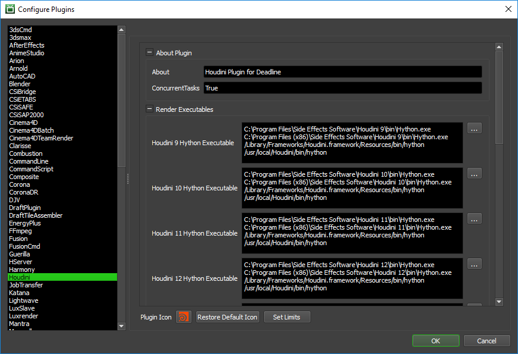
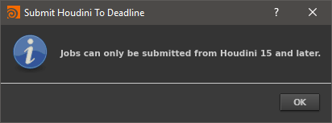

Houdini¶
Job Submission¶
You can submit jobs from within Houdini by installing the integrated submission script, Deadline ROP node, or you can submit them from the Monitor. The instructions for installing the integrated submission script and Deadline ROP node can be found further down this page.
To submit from within Houdini, select ‘Render’ -> ‘Submit To Deadline’, or create a Deadline ROP node within your scene.
Submission Options¶
The general Deadline options are explained in the Job Submission documentation, and the Draft/Integration options are explained in the Draft and Integration documentation. The following Houdini specific options are used when submitting with the integrated or Monitor submitter:
ROP To Render:
Choose: Allows you to choose your ROP from the dropbox to the right.
Selected: Allows you to render each ROP that you currently have selected in Houdini (in the order that you selected)
All: Allows you to render every ROP in the Houdini file.
Ignore Inputs: If enabled, only the selected ROP will be rendered. No dependencies will rendered.
Build to Force: Force 32 or 64 bit rendering.
Ignore Bypassed Nodes: If enabled, bypassed ROPs will be skipped over when submitting multiple ROPs.
Automatically Create Dependencies: If enabled, ROP dependencies will be reflected in the Deadline job dependencies when submitting multiple ROPs.
Submit Wedges as Separate Jobs: If enabled, each Wedge in a Wedge ROP will be submitted as a separate job with the current Wedge settings. This option is only enabled if the selected ROP is a Wedge ROP, or if all ROPs are being rendered and at least one of them is a Wedge ROP.
Jobs are Frame Dependent: If enabled, Workers will render tasks for frames that have completed in the dependency job. If disabled, Workers will not pick up any tasks until the entire dependency job is complete
Troubleshooting Render Issues¶
The troubleshooting guide does not handle some differences specific to Houdini rendering, this guide will focus on the specifics related to how Deadline runs Houdini renders.
To start we’ll need the error report, as that has the command we’ll need as well as the name of the render node we’ll be testing on. It’s important to test on the same render node that had the error. This way if the issue is related to the configuration of the individual render node we’ll be testing for it. You can find the name of the render node at the end of the task report on the line with “Worker Name:”.
Search that log for a line that contains the phrase “Full Command”, here is one taken right out of a task report:
2023-03-03 15:20:21: 0: INFO: Full Command: "C:\Program Files\Side Effects Software\Houdini 19.5.493\bin\Hython.exe" "C:\ProgramData\Thinkbox\Deadline10\workers\render_node1\plugins\60ccf1c4fe540a0470ff804c\hrender_dl.py" -f 1001 1006 1 -o "Z:/assets/farm_test.$F4.exr" -g -d /out/Redshift_ROP1 -tempdir "C:\ProgramData\Thinkbox\Deadline10\workers\render_node1\jobsData\60ccf1c4fe540a0470ff804c\0_tempzdETq0" -arnoldAbortOnLicenseFail 1 "C:/ProgramData/Thinkbox/Deadline10/workers/render_node1/jobsData/60ccf1c4fe540a0470ff804c/my_test_scene.hip"
Now strip the timestamp, and everything that isn’t the actual command:
"C:\Program Files\Side Effects Software\Houdini 19.5.493\bin\Hython.exe" "C:\ProgramData\Thinkbox\Deadline10\workers\render_node1\plugins\60ccf1c4fe540a0470ff804c\hrender_dl.py" -f 1001 1006 1 -o "Z:/assets/farm_test.$F4.exr" -g -d /out/Redshift_ROP1 -tempdir "C:\ProgramData\Thinkbox\Deadline10\workers\render_node1\jobsData\60ccf1c4fe540a0470ff804c\0_tempzdETq0" -arnoldAbortOnLicenseFail 1 "C:/ProgramData/Thinkbox/Deadline10/workers/render_node1/jobsData/60ccf1c4fe540a0470ff804c/my_test_scene.hip"
The next issue is that this command references a couple files in temporary locations that are more than likely gone at this point or have been copied to the render node by the Worker.
First we need the script that we pass to Houdini called hrender_dl.py. This is in DeadlineRepository10/plugins/Houdini. Copy it to the render node where it’ll be easy to reference. In this example we copy it to the Windows desktop of the user the Worker runs under, named ‘render’.
Second we need the path to the .hip file. You likely don’t need to move the file as it should be readable from where it is for rendering anyways. The exception is if the job was submitted with ‘Submit Houdini Scene’, in which case the path will be to a temporary location and will need to be copied to the render node.
Third we need to provide a temporary directory for rendering, the desktop will do for us here.
With those, our new command looks like this:
"C:\Program Files\Side Effects Software\Houdini 19.5.493\bin\Hython.exe" "C:\Users\render\Desktop\hrender_dl.py" -f 1001 1006 1 -o "Z:/assets/farm_test.$F4.exr" -g -d /out/Redshift_ROP1 -tempdir "C:\Users\render\Desktop\" -arnoldAbortOnLicenseFail 1 "Z:/projects/my_test_scene.hip"
If no pathmapping is required the next step is to actually run the command from the Command Prompt, Terminal or Shell as applicable to your operating system.
If the scene needs path-mapping to function then you’ll have to set the HOUDINI_PATHMAP environment variable. If your path mapping rule is set to convert Z:/assets/ into /mnt/assets, set HOUDINI_PATHMAP={"Z:/assets/":"/mnt/assets/"} before running the above command.
There are steps you can take now that you’ve run the render externally. In some cases Houdini render errors are multiple lines long and this test will show all lines of the error where Deadline would have cancelled the task before everything was printed.
If the render still fails, then the issue would be either in the scene or in the render node itself. Try testing with a simpler scene, or on a different render node to identify which of the two is the issue.
ROP Node¶
The Deadline output driver submits render jobs to Deadline for distribution on the farm. When you press the ‘Submit to Deadline’ button all upstream nodes will be submitted to Deadline while respecting all dependencies, locks and bypassed nodes. While submitting jobs if another Deadline ROP is encountered all further dependent nodes will use the new ROPs properties for future jobs.
In this example mantra1 and mantra3 will use the settings from deadline1 while mantra2 will use the settings of deadline2.
Setting Defaults¶
You can also easily set defaults for our node (or any node) in Houdini without needing to script at all, just follow these steps.
Have Houdini open with a Deadline ROP node created
Set all the values you want as default (pools, groups, and limits are in the ‘Job Options’ tab of the Deadline ROP node)
- Click the gear beside the Deadline ROP Name and select:
‘Save Preset…’ if you want the choice between different default values
‘Save as Permanent Defaults’ if you want every created Deadline ROP node to have these defaults
Tile Rendering Options¶
Enable Tile Rendering to split up a single frame into multiple tiles.
Enable Tile Rendering: If enabled, the frame will be split into multiple tiles that are rendered individually and can be assembled after.
Use Jigsaw Rendering: Enable to use Jigsaw, otherwise a grid of tiles will be used.
Single Frame Tile Job Enabled: Enable to submit all tiles in a single job.
Single Job Frame: The frame that will be split up.
Submit Dependent Assembly Job: Submit a job dependent on the tile job that will assemble the tiles.
Cleanup Tiles after Assembly: If selected the tiles will be deleted after assembly.
Error on Missing Tiles: If enabled, then if any of the tiles are missing the assembly job will fail.
Assemble Over: Determine what the Draft Tile Assembler should assemble over be it a blank image, previous output or a specified file.
Error on Missing Background: If enabled, then if the background file is missing the job will fail.
Note: Tile rendering is not currently supported for dependent V-Ray jobs.
IFD Exporting and Mantra Standalone¶
The Houdini submitter allows you to submit a job that will export the scene to IFD files, and then submit a dependent Mantra Standalone job to render the exported IFD files.
When submitting from the Monitor, you just need to enable the Override Export IFD option. When submitting from within Houdini using the integrated submission script, you must first make sure that the ROPs you wish to export have the Disk File option enabled in their properties, and then enable the Submit Dependent Mantra Standalone Job option in the submitter. Note that if a ROP does not have the Disk File setting enabled, it will simply render the image, and no dependent Mantra Standalone job will be submitted.
The general Deadline options for the Mantra Standalone job are explained in the Job Submission documentation. The Mantra Standalone specific options are:
Export Mantra Locally: If enabled, the Mantra IFD files will be exported by your machine before the Mantra standalone job is submitted.
Mantra Threads: The number of threads to use for the Mantra standalone job.
Arnold Exporting and Arnold Standalone¶
The Houdini submitter allows you to submit a job that will export the scene to Arnold .ass files, and then submit a dependent Arnold Standalone job to render the exported .ass files.
The general Deadline options for the Arnold Standalone job are explained in the Job Submission documentation. The Arnold Standalone specific options are:
Export Arnold Locally: If enabled, the Arnold .ass files will be exported by your machine before the Arnold standalone job is submitted.
Arnold Threads: The number of threads to use for the Arnold standalone job.
RenderMan Exporting and RenderMan Standalone¶
The Houdini submitter allows you to submit a job that will export the scene to .rib files, and then submit a dependent RenderMan Standalone job to render the exported .rib files.
Starting from RenderMan 21, the RenderMan RIS node must be used to render a scene.
When submitting from within Houdini using the integrated submission script, you must first make sure that the ROPs you wish to export have the Disk File option enabled in their properties, and then enable the Submit Dependent RenderMan Standalone Job option in the submitter. Note that if a ROP does not have the Disk File setting enabled, it will simply render the image, and no dependent RenderMan Standalone job will be submitted. Also note that if you wish to render from a range of frames, the export file’s name must contain the frame number so that a .rib file is exported for each frame (see below image for an example).
The general Deadline options for the RenderMan Standalone job are explained in the Job Submission documentation. The RenderMan Standalone specific options are:
Export RenderMan Locally: If enabled, the RenderMan .rib files will be exported by your machine before the RenderMan standalone job is submitted.
RenderMan Threads: The number of threads to use for the RenderMan standalone job.
V-Ray Exporting and V-Ray Standalone¶
The Houdini submitter allows you to submit a job that will export the scene to .vrscene files, and then submit a dependent V-Ray Standalone job to render the exported .vrscene files. Currently only V-Ray Standalone is supported.
The general Deadline options for the V-Ray Standalone job are explained in the Job Submission documentation. The V-Ray Standalone specific options are:
Export V-Ray Locally: If enabled, the V-Ray .scene files will be exported by your machine before the V-Ray standalone job is submitted.
V-Ray Threads: The number of threads to use for the V-Ray standalone job.
Note: If exported .vrscene files will overwrite then a frame number will be appended to the .vrscene file. This will not affect dependent V-Ray Standalone jobs.
Distributed Simulation Jobs¶
The Houdini submitter allows you to submit a job that will run a distributed simulation.
In order to submit a simulation job you will have to first set up your fluid simulation. Once you have your simulation set up, click the Distribute tool found on the Wire, Cloth, or Particle fluids tab, select the item you wish to distribute and then press enter. This will create 3 new nodes, the specific node that controls the simulation will be sent to Deadline as the new distributedsim node in the /out tree. This node defines how many slices your simulation will have.
Once you have the distributed sim node set up, submit it to Deadline using the regular Deadline in-app submitter. Additional information for setting up distributed submissions and the properties defined in the nodes can be found in the Houdini Documentation.
Pipeline Tools¶
When using the integrated submitter to submit through Houdini you have the ability to use any of the event plugins that you have enabled through the Deadline Monitor. This is done by opening the Pipeline Tools window via the Pipeline Tools button. This window is explained further in the Pipeline Tools documentation.
Plugin Configuration¶
You can configure the Houdini plugin settings from the Monitor. While in power user mode, select Tools -> Configure Plugins and select the Houdini plugin from the list on the left.
Note, if the executable supports a MAJOR.MINOR.REVISION (9.0.123) numbering system in its path, then you will need to configure the explicit exe path to the particular revision that you have installed on your machines. Deadline does not track every possible revision available or indeed where it might be custom installed to, so a studio should verify their exe paths are correct for each application version they choose to use with Deadline. Multiple exe paths can still be declared and the first one that is found on a particular Worker on a particular platform will be used from the exe list.
Render Executables
Hython Executable: The path to the hython executable. It can be found in the Houdini bin folder. Enter alternative paths on separate lines. Different executable paths can be configured for each version installed on your render nodes.
HQueue Simulation Job Options
Tracker File: The path to the simtracker.py file that is used when distributing HQueue Sim jobs. Note that this file can be found in the Houdini install.
Houdini Sim Tracker Port: The port number that the Sim Tracker will listen on for communication.
Houdini Sim Web Service Port: The port number for the Sim Tracker’s Web Service.
Use IP Address for Sim Tracker: If enabled, the IP address of the machine running the Sim Tracker process will be used for communication instead of the host name.
Licensing Options
Workers To Use Escape License: A list of Workers that should use a Houdini Escape license instead of a Batch license. Use a , to separate multiple Worker names, for example: worker001,worker002,worker003
Path Mapping (For Mixed Farms)
Enable Path Mapping: If enabled, Deadline will use Houdini’s HOUDINI_PATHMAP environment variable to perform path mappings on the contents of the Houdini scene file. This feature can be turned off if there are no Path Mapping entries defined in the Repository Options.
Arnold Options
Abort On Arnold License Fail: If enabled, the render will fail if Arnold cannot get a license. If disabled, Arnold will render with a watermark if it cannot get a license (Only applies when Arnold is the Renderer).
Integrated Submission Script Setup¶
The following procedures describe how to setup the integrated Houdini submission script for Deadline. This script has been tested with Houdini 9 and later.
You can either run the Submitter installer or manually install the submission script.
Submitter Installer¶
Run the Submitter Installer located at
<Repository>/submission/houdini/Installers.
Manual Installation¶
Current User
First, copy the following files and directories to: %localappdata%\Thinkbox\Deadline[VERSION]\submitters\HoudiniSubmitter on Windows or ~/Library/Application Support/Thinkbox/Deadline[VERSION]/submitters/HoudiniSubmitter on macOS or ~/Thinkbox/Deadline[VERSION]/submitters/HoudiniSubmitter on Linux (where [VERSION] is the major version of Deadline such as 10):
<Repository>\submission\Houdini\Client\otls
<Repository>\submission\Houdini\Client\soho
<Repository>\submission\Houdini\Client\DeadlineHoudiniClient.py
<Repository>\submission\Houdini\Client\MainMenuCommon.xml
Second, update the MainMenuCommon.xml that was copied by replacing SUBMITTER_DIR with %localappdata%\Thinkbox\Deadline[VERSION]\submitters\HoudiniSubmitter on Windows, ~/Library/Application Support/Thinkbox/Deadline[VERSION]/submitters/HoudiniSubmitter on macOS and ~/Thinkbox/Deadline[VERSION]/submitters/HoudiniSubmitter on Linux.
Third, copy <Repository>\submission\Houdini\Client\CallDeadlineCommand.py to %HOME%\Houdini{version}\python3.9libs on Windows, $HOME/Houdini[VERSION]/python3.9libs on Linux, and $HOME/Library/Preferences/houdini/[VERSION]/python3.9libs on macOS.
Finally, you need to update your houdini environment. The method for this depends on which version of houdini you are using.
If you are installing the submitter for houdini 17.5 or above, you need to copy <Repository>\submission\Houdini\client\deadline.json to %HOME%\Houdini{version}\packages on Windows, $HOME/Houdini[VERSION]/packages on Linux, and $HOME/Library/Preferences/houdini/[VERSION]/packages on macOS.
If you are installing the submitter for houdini 17.0 or earlier, you need to add the following to the houdini.env file located in the Houdini [HOU VERSION] folder located in your user directory. In this file you need to add the following lines:
HOUDINI_PATH = "$HOUDINI_PATH;[HOU SUBMITTER DIR];&"
HOUDINI_MENU_PATH = "$HOUDINI_MENU_PATH;[HOU SUBMITTER DIR];&"
(where [HOU SUBMITTER DIR] is the directory you copied the files to in the first step of installation.)
All Users
Copy the contents of
<Repository>/submission/Houdini/Clientto a location accessible by all users.Update the MainMenuCommon.xml that was copied by replacing SUBMITTER_DIR with the full path of the directory you copied the contents of the submitter to.
Set the Environment variable
HOUDINI_PACKAGE_DIRto the directory configured above.
Custom Sanity Check Setup¶
Note
Custom Sanity Checks will NOT work with the Deadline ROP.
In Houdini, sanity checks are automatically run when you launch the submitter. They can be used to:
Check for certain conditions in the Houdini scene
Modify the Houdini scene before submitting
Initialize the Deadline submitter fields (job naming conventions, priority, etc..)
Lock submission fields so users can’t change them
Sanity checks can be added by creating a CustomSanityChecks.py file alongside the main SubmitHoudiniToDeadline.py submission script in <DeadlineRepository>\submission\Houdini\Main. Simply create a function in this file called RunSanityCheck, and then add your sanity check code to it.
In this example, we are going to create a sanity check that will disable the Job name text box so users cannot change it. This sanity check will also prevent the submitter from launching if using a version of Houdini earlier than version 15. In order to do this, we need to create the script mentioned above, and ensure it contains the function RunSanityCheck that accepts a reference to the submitter dialog (giving you full control to modify the window).
#
# CustomSanityChecks.py
#
import hou
def RunSanityCheck(dialog):
# Disable the Job Name box.
dialog.enableValue("jobname.val", False)
# Don't open the submitter if the version number of Houdini is less than 15.
if hou.applicationVersion()[0] < 15:
hou.ui.displayMessage("Jobs can only be submitted from Houdini 15 and later.", title="Submit Houdini To Deadline")
return False
return True
All your checks should be placed within this function. This function should return True for successfully passing any sanity checks.
If you try to run the submitter from Houdini 14, you will now see the following message:
FAQ¶
Which versions of Houdini are supported by Deadline?
Houdini 9 and later is supported. To render with Houdini 7 or 8, use the Mantra Plugin.
Which Houdini license(s) are required to render with Deadline?
Deadline uses Hython to render, which uses hbatch licenses. If those are not available, it will try to use a Master License instead.
Are HQueue Simulation nodes supported?
Yes. Simply select the HQueue simulation node in the integrated submitter when submitting the job to Deadline, and a job will be submitted with one task per slice.
Do all tasks for HQueue simulation jobs need to be picked up before the job can render?
Yes. This is how regular HQueue simulation jobs operate, and it’s the same when using Deadline. This is because all nodes that are rendering each slice need to be able to communicate their progress with each other.
Does Path Mapping work in Houdini?
Yes for input, not always for output. Path Mapping in Houdini is done through it’s HOUDINI_PATHMAP environment variable which as of Houdini 14.0.339 has a known bug that it will not work on all output formats.
Error Messages and Meanings¶
This is a collection of known Houdini error messages and their meanings, as well as possible solutions. We want to keep this list as up to date as possible, so if you run into an error message that isn’t listed here, please visit the Thinkbox Help Centre and let us know.
Currently, no error messages have been reported for this plugin.

{kind=link}
{kind=link}
{kind=link}
{kind=link}
{kind=link}
{kind=link}
{kind=link}
{kind=link}
{kind=link}
{kind=link}
{kind=link}
{kind=link}
{kind=link}
{kind=link}